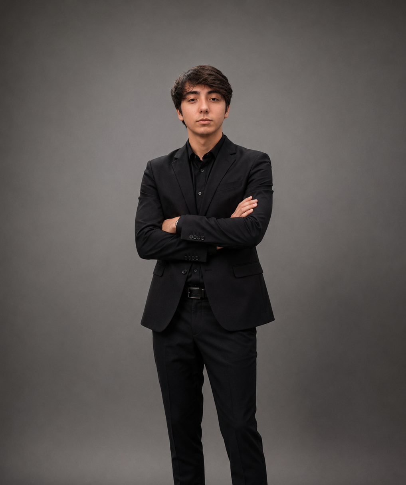

Telefone:
(19) 97169-0704
E-mail:
luanwilliandonascimento@gmail.com
Endereço:
Americana - SP
Data de Nascimento:
20 de Agosto de 2009

Telefone:
(19) 98346-6155
E-mail:
lucasfroner17@gmail.com
Endereço:
Nova Americana - Americana - SP
Data de Nascimento:
28 de Maio de 2010
Somos estudantes do Curso Técnico em Informática, apaixonados por tecnologia, inovação e desenvolvimento de soluções. Atualmente cursamos o ensino médio na Escola Estadual Heitor Penteado, em Americana - SP, onde buscamos constantemente aprimorar nossos conhecimentos técnicos e profissionais.
Durante nossa formação, desenvolvemos habilidades em programação, desenvolvimento web, redes de computadores, banco de dados e manutenção de sistemas, sempre valorizando o trabalho em equipe, a responsabilidade e a busca por aprendizado contínuo.
Nosso objetivo é construir uma carreira sólida na área da tecnologia, aplicando nossos conhecimentos em projetos reais, enfrentando novos desafios e contribuindo com soluções criativas e eficientes.